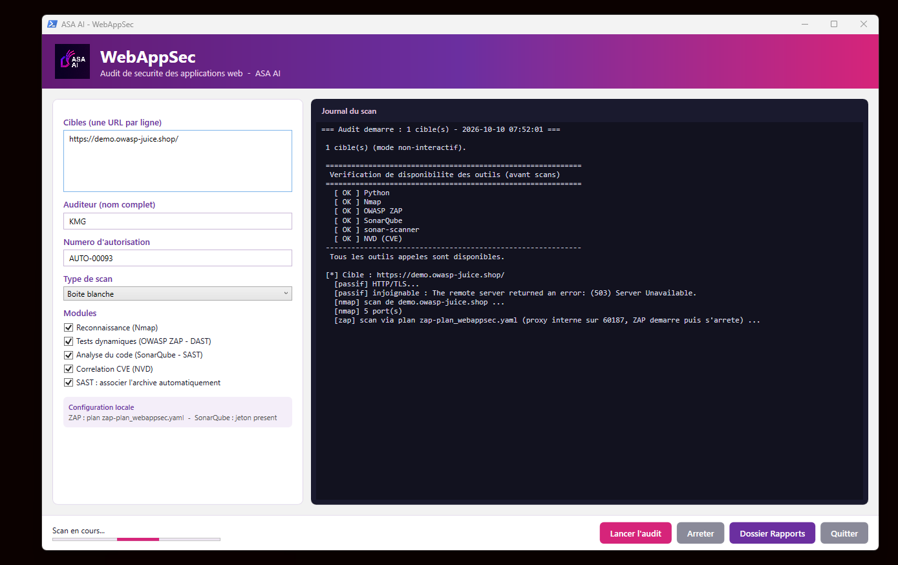
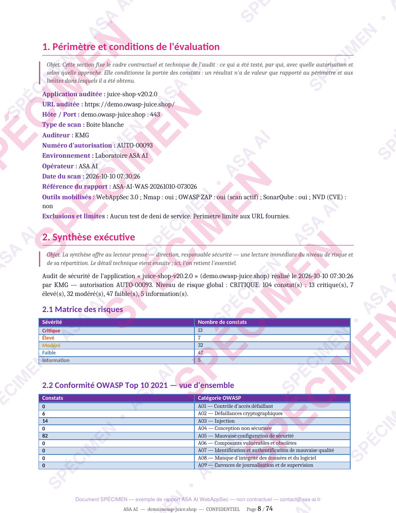
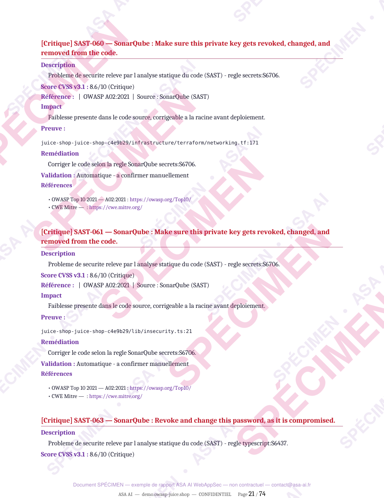

Five scanners.
One report your CISO can act on.
Running Nmap, a DAST, a SAST and a CVE lookup separately gives you four noisy outputs and no verdict. WebAppSec chains them in a single launch, re-tests every finding, drops the false positives and delivers one board-ready report per application.

One launch. Five complementary layers.
Each layer sees what the others miss. Together they cover the exposed surface, the running application, the code and its dependencies.
Reconnaissance
Exposed ports and services, TLS / SSL posture, HTTP methods and CORS policy.
Dynamic testing (DAST)
Live application vulnerabilities: injection, XSS, misconfiguration and more.
Static analysis (SAST)
Code-level weaknesses and hard-coded secrets, from the matching source archive.
Known vulnerabilities
Version-based CVE correlation, filtered so unreliable matches never reach the report.
Third-party components
Vulnerable and outdated dependencies shipped with the application.
Re-test & grading
Every finding is re-tested, false positives are removed and the global risk is recomputed on confirmed findings only.
Set the scope. Launch. Hand over the report.
Define the engagement
Target URLs, auditor, authorization number, black-box or white-box scan, and the modules to run. A pre-flight check confirms every engine is ready before the first request.
Read the verdict first
The executive summary gives management the global risk level, the severity matrix and the OWASP Top 10 2021 overview on a single page.

Fix with evidence in hand
Each finding carries its description, CVSS v3.1 score, OWASP reference, impact, proof, remediation and validation status, so developers know exactly what to change.

A deliverable, not a pile of scanner exports.
- Premium cover page, scope and authorization on record.
- Executive summary with the global risk and severity matrix.
- OWASP Top 10 2021 mapping and ASVS / WSTG coverage matrix.
- Graded findings with CVSS score, proof and remediation.
- Prioritized remediation plan to close the audit.
- Word (.docx), ready for a CISO or a compliance file.
Try it on your own applications. 5 scans, free.
Get your license key
- Request your key with a business e-mail and phone number.
- Our team validates your request.
- You receive your license key and the download by e-mail.
- Enter the key the first time you launch the tool.
Each key allows 5 scans, counted server-side, and is bound to one workstation. Need more, or an audit run by our team? Just ask.
Requirements
- Windows 10 / 11 or Windows Server, 64-bit.
- Network access to the target application.
- Prior written authorization from the owner of the systems under test.
The tool runs on your workstation. Reports are generated locally.
Know where your web apps stand. Before an attacker tells you.
Request your key and run your first audit today, or let our team run it with you.
Screens and sample report produced on the ASA AI lab against intentionally vulnerable applications. Source code is not distributed.